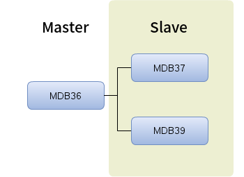
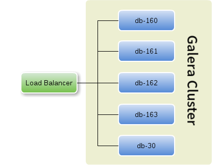

MySQL Galera Cluster
 Created by Lai, Wei-Chen
Created by Lai, Wei-Chen
大綱
- 原架構
- Cluster 架構
- 新架構優勢
原架構

Cluster 架構

Cluster 優點
- 每一個節點都可以接受寫入要求
- 寫入也可以做負載平衡
- 不因單一節點失效影響全站服務
- 建立新節點更快速
- 擴充或調整規模更容易
- 沒有 Master / Slave 的差距問題
如果負載量不足需要擴充…
在 Master/Slave 架構，新增一個 Slave 需要：
- 佔用一台 slave （無已存在的 slave 則需用 master）做 mysqldump 。
- 匯出過程需要 Lock tables ，期間無法進行寫入操作。
- 匯出/匯入的過程耗時，以樂屋網來說，資料庫建立一個全新 Slave 約須 2 小時 左右。
- Slave 只能負擔讀取要求。
新增一個 Galera Cluster 的節點，需要：
- 準備一台裝好 MySQL Galera 的機器，套上設定直接啟動即可。
- 不須 Lock table ，整個過程 cluster 依舊能繼續服務。
- 樂屋網資料庫加入一個新節點大約花費 8 分鐘 左右。
- Galera Cluster 的每個節點都能讀寫。
如果節點失效…
在 Master/Slave 架構，若 Master 失效：
- 需要人工將 Slave 轉為 Master ，期間資料庫寫入將停擺。
- 重新建立一台 Slave 相當耗時。
如果 Galera Cluster 的部份節點失效：
- Galera Cluster 會自動把失效的節點移出叢集，不影響線上服務。
- 再重新準備一台機器替代失效的節點上線即可。
- No down time
總結
- 提升服務可靠度
- 增加系統擴充及調整的彈性
- 減少意外恢復時間